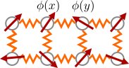
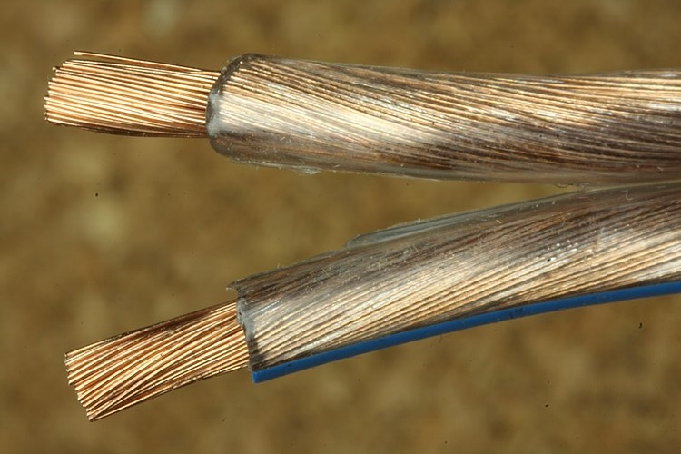
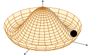

Kantaro Ohmori
Riken iTHEMS
@ Symmetry Online Seminar
March 31, 2026
Based on (Ando and Ohmori 2026) — arXiv:2602.11696
\[ \DeclareMathOperator{\sslash}{\mathbin{/\mkern-6mu/}} \DeclareMathOperator{\sslash}{\mathbin{/\mkern-6mu/}} \DeclareMathOperator{\Fib}{Fib} \DeclareMathOperator{\Hom}{Hom} \DeclareMathOperator{\End}{End} \DeclareMathOperator{\Rep}{Rep} \DeclareMathOperator{\Mod}{Mod} \]
What is macroscopic (IR) physics
given a microscopic (UV) description / model, and vice versa?

?

1 : gapless (e.g. conductor): gapped (e.g. insulator)
💡 Utilize \(\mathcal{S}_\text{UV}\) to constrain possible IR physics!
💡 Utilize \(\mathcal{S}_\text{IR}\) to engineer potential UV model!
Other properties of symmetry that enforce gaplessness?
Symmetry Span
There are symmetry spans that admit no TQFT!
gapless excitation or exotic non-TQFT non-CFT phase.
Generalized Symmetry \(\mathcal{S}\) := all topological operators in a system
RG flow invariance \(\phi_{\text{RG}} : \mathcal{S}_{UV} \to \mathcal{S}_{IR}\)
\(i^*(\mathrm{TQFT}(\mathrm{TY}(\mathbb{Z}_2))) = \mathbb{N}[(\mathrm{Vect}_{\mathbb{Z}_2} \oplus \mathrm{Vect})]\) \(\subsetneq\) \(\mathrm{TQFT}(\mathbb{Z}_2)\) \(\ni (\mathrm{Vect}_{\mathbb{Z}_2} \oplus \mathrm{Vect})^{\oplus n}\)
Nambu-Goldstone Theorem
If \(g \in G_\text{conn}\) acts non-trivially on vacua,
gapless modes appear!

1
For connected \(G\), no SSB in a gapped phase:
\[\mathrm{TQFT}(G) \cong \mathbb{N}[G\mathrm{-SPTs}]\]
If \(\mathcal{T}_\text{IR}\) is a TQFT, \(i_\mathcal{C}^\ast \mathcal{T}_\mathcal{C} \cong i_\mathcal{D}^\ast \mathcal{T}_\mathcal{D} \in \mathrm{TQFT}(\mathcal{E})\)
Or,
\(i_\mathcal{C}^\ast \mathrm{TQFT}(\mathcal{C}) \cap i_\mathcal{D}^\ast \mathrm{TQFT}(\mathcal{D}) \cong \{0\}\) no symmetric TQFT!
no symmetric TQFT IR!
\(H = \sum_j \left( Y_j Z_{j+1} - Z_j Y_{j+1} \right)\)
\(\stackrel{\text{RG}}{\rightsquigarrow}\) Compact Boson @ \(R=\sqrt{2}R_\text{s.d.}\)
\(\mathsf{D}, Q = \sum_j X_j\)
\(\rightsquigarrow\) \(Q_w = \sum_j Z_j Z_{j+1}\)
Onsager algebra
(Vernier, O’Brien, and Fendley 2019; Pace, Chatterjee, and Shao 2025)
\(\stackrel{\text{RG}}{\rightsquigarrow}\) \(\mathrm{U}(1) ^\text{shift} \times \mathrm{U}(1)^\text{wind}\)
The same structure for gaplessness on lattice and in continuum.
Continuum
\(\mathcal{S}^\text{faith} \supset\) continuous \(G\) with anomaly
Lattice
\(\mathcal{S}^\text{faith} \supset\) Onsager(-like) algebra
Symmetry Span
\(i_\mathcal{C}^\ast \mathrm{TQFT}(\mathcal{C}) \cap i_\mathcal{D}^\ast \mathrm{TQFT}(\mathcal{D}) \cong \{0\}\)
no symmetric TQFT!